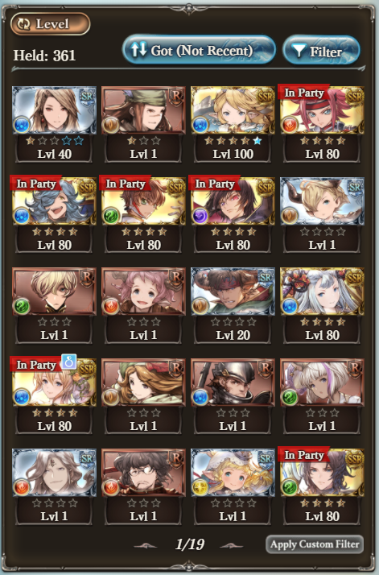

About Me (and Granblue)
What even is Granblue?
Granblue Fantasy is a gacha JRPG created by Cygames. You can try it
here
if you want to.
Why did I start playing Granblue?
Got baited by the Code Geass collaboration event.
Why main Water?
I didn't choose Water, Water chose me. Besides the guaranteed characters and Code Geass characters, Drang was my very first character. Everything just happened after that.
